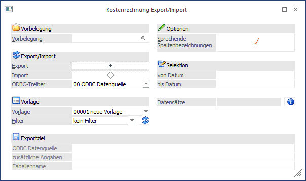
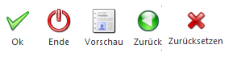
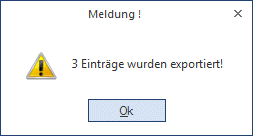
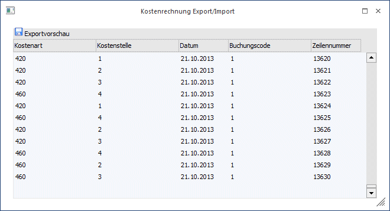
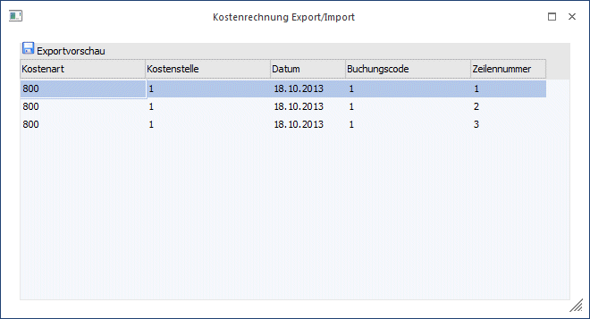
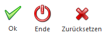

Der Menüpunkt "Kostenrechnung Export/Import" ermöglicht den Im- und Export von KORE-Journalzeilen in die WinLine Kostenrechnung.
Voraussetzung, um die Daten zu exportieren oder importieren ist, dass eine Vorlage für diesen Bereich angelegt wurde (nähere Informationen dazu entnehmen Sie bitte dem WinLine START Handbuch). Dazu muss auch noch eine gültige Lizenz für das Modul vorhanden sein.
Der Im- bzw. Export wird über den Menüpunkt
1 Kosten
1 Kostenrechnung Export/Import
aufgerufen.
Ø Vorbelegung
Über die Vorbelegung kann ein Ex- oder Importvorgang gespeichert werden. Dabei werden alle vorgenommenen Einstellungen gemerkt und diese können jederzeit wieder verwendet werden. Wurde bereits eine Vorbelegung definiert, kann diese durch Drücken der F9-Taste gesucht werden. Wurde noch keine Vorbelegung definiert, kann diese durch eine Eingabe im Feld "Vorbelegung" angelegt werden. Wurden alle Eingaben durchgeführt, wird die Vorbelegung durch Drücken der F5-Taste gespeichert.
Export /Import
Je nachdem, welche Option ausgewählt wird, können unterschiedliche Felder bearbeitet werden.
ü Export
Wird diese Option
gewählt, können nachfolgende Felder bearbeitet werden:

Ø ODBC-Treiber
Wahl des ODBC-Treibers der verwendet werden soll. Welche Treiber zur Verfügung stehen, hängt von der Installation des PCs ab. Grundsätzlich sind die ODBC-Treiber nicht (bzw. nur teilweise) im Auslieferumfang der WinLine enthalten. MESONIC ist für die Funktionsfähigkeit bzw. das Vorhandensein der Treiber nicht zuständig.
Ø Vorlage
Eingabe der Vorlage, die für den Export verwendet werden soll. Aus der Auswahllistbox kann eine der Vorlagen gewählt werden, die für den Im- oder Export von KORE-Journalzeilen erstellt wurde. Die Vorlagen selbst werden im Programm WinLine START über den Menüpunkt Vorlagen/Vorlagen Anlage angelegt.
Ø Vorlagenfilter
Durch Auswahl eines Vorlagenfilters aus der Auswahllistbox (hier werden alle bereits angelegten Filter angezeigt) kann die Ausgabe der Datensätze auf bestimmte Datensätze beschränkt werden (z.B. nur KORE-Zeilen mit einer bestimmten Kostenart).
Die Anlage der Filter erfolgt durch Anklicken des Filter-Buttons, der sich neben dem Eingabefeld befindet - damit werden Sie durch den Filter-Assistenten geführt, der bei der Anlage eines Filters hilft. Wird ein neuer Filter angelegt, wird dieser automatisch ins Eingabefenster gestellt und kann natürlich durch einen anderen (bzw. keinen Filter) aus der Auswahllistbox ersetzt werden.
Exportziel
Ø Beschreibung von Datei bzw. Datenbank.
In Abhängigkeit der am PC installierten ODBC-Treiber werden Felder angezeigt, in denen das Ziel (Bereich in den die Daten aus der WinLine kommend abgespeichert werden) beschrieben wird.
Bei der Wahl von Datenbanken als Ziel müssen der Datenbankpfad, der Datenbankname und der Tabellenname angegeben werden.
Achtung
Der ODBC-Treiber kann zwar innerhalb von Datenbanken (ACCESS oder EXCEL) Tabellen erzeugen und diese Tabellen mit Datensätzen füllen, er kann aber nicht die Datenbank selbst erstellen. Diese muss bereits vorhanden sein.
Hinweis
Je nachdem, welche ODBC-Treiber verwendet werden bzw. welche ODBC-Treiber-Version verwendet wird, kann es zu ungewünschten Verhalten des Export/Imports kommen, wenn Sonderzeichen im Verzeichnisnamen oder im Datenbankname vorkommen. Aus diesem Grund wird - wenn solche Sonderzeichen verwendet werden - eine entsprechende Warnmeldung ausgegeben:

Exportoptionen
Ø Sprechende Spaltenbezeichnung
Ist diese Checkbox aktiv, erhalten die exportierten Spalten den Namen des ursprünglichen Feldes.
Ist diese Checkbox nicht aktiv, werden die Spalten nach den Spaltenbezeichnungen in der Datenbank (z.B. C021) benannt. Wird ein Import ohne Option "Sprechende Spaltenbezeichnung" durchgeführt, müssen die Felder der Datenquelle gleich heißen, wie die Felder in der Datenbank.
Selektion
Ø Datum von - bis
Einschränkung des Datumbereichs, für den der Export durchgeführt werden soll.
Ø Datensätze
Mittels des "Info-Buttons" kann die Anzahl der selektierten Datensätze ermittelt werden.
Buttons

Ø OK
Soll der Export gestartet werden, drücken Sie den Button "OK" (F5 oder Anklicken mit der Maus).
Nach erfolgtem Export gibt das Programm eine Meldung aus, wie viele Datensätze exportiert werden konnten.

Ø Ende
Durch Drücken der ESC-Taste wird das Fenster geschlossen.
Ø Vorschau
Nach Drücken des Buttons "Vorschau" werden sämtliche Datensätze, die nach Starten des Exports durch Drücken der Taste "OK" exportiert würden, in einer Tabelle am Bildschirm angezeigt.

Ø Zurück
Durch Anklicken des Zurück-Buttons wird wieder in das Steuerungsfenster gewechselt.
Ø Zurücksetzen
Durch Drücken des Buttons "Zurücksetzen" werden alle Eingaben und Selektionen im Export-Fenster wieder gelöscht (z.B. auf welchen Pfad oder Tabellennamen ausgegeben werden soll). Danach kann der Export von Null weg neu definiert werden. Außerdem können Sie durch Beantwortung der Abfrage "Wollen Sie die Vorbelegung "xxxxxx" löschen" (xxxxxx steht für den Namen der Vorbelegung) die Vorbelegung aus der Datenbank löschen.
ü Import
Wird diese Option
gewählt, werden alle vorhandenen Datensätze importiert.
Ø ODBC-Treiber
Wahl des ODBC-Treibers der verwendet werden soll. Welche Treiber zur Verfügung stehen, hängt von der Installation des PCs ab. Grundsätzlich sind die ODBC-Treiber nicht (bzw. nur teilweise) im Auslieferumfang der WinLine enthalten. mesonic ist für die Funktionsfähigkeit bzw. das Vorhandensein der Treiber nicht zuständig.
Ø Vorlage
Eingabe der Vorlage, die für den Export verwendet werden soll. Aus der Auswahllistbox kann eine der Vorlagen gewählt werden, die für den Im- oder Export von KORE-Journalzeilen erstellt wurde. Die Vorlagen selbst werden im Programm WinLine START über den Menüpunkt Vorlagen/Vorlagen Anlage angelegt.
Datenquelle
Ø Beschreibung von Datei bzw. Datenbank.
In Abhängigkeit der am PC installierten ODBC-Treiber werden Felder angezeigt, in denen die Quelle (Bereich aus dem die Daten in die WinLine importiert werden) beschrieben werden.
Bei der Wahl von Datenbanken als Quelle müssen der Datenbankpfad, der Datenbankname und die Tabellennamen angegeben werden.
Achtung
Der ODBC-Treiber kann zwar innerhalb von Datenbanken (ACCESS oder EXCEL) Tabellen erzeugen und diese Tabellen mit Datensätzen füllen, er kann aber nicht die Datenbank selbst erstellen. Diese muss bereits vorhanden sein.
Hinweis
Je nachdem, welche ODBC-Treiber verwendet werden bzw. welche ODBC-Treiber-Version verwendet wird, kann es zu ungewünschten Verhalten des Export/Imports kommen, wenn Sonderzeichen im Verzeichnisnamen oder im Datenbankname vorkommen. Aus diesem Grund wird - wenn solche Sonderzeichen verwendet werden - eine entsprechende Warnmeldung ausgegeben:
Importoptionen
Ø Sprechende Spaltenbezeichnung
Ist diese Checkbox aktiv, erhalten die exportierten Spalten den Namen des ursprünglichen Feldes.
Ist diese Checkbox nicht aktiv, werden die Spalten nach den Spaltenbezeichnungen in der Datenbank (z.B. C021) benannt. Wird ein Import ohne Option "Sprechende Spaltenbezeichnung" durchgeführt, müssen die Felder der Datenquelle gleich heißen, wie die Felder in der Datenbank.
Ø Zeilen vor dem Import editieren
Wird diese Option aktiviert, können sämtliche Datensätze VOR dem endgültigen Einlesen in die WinLine Datenbank in einer Bearbeitungstabelle editiert bzw. kontrolliert werden. Folgende Funktionen stehen zur Verfügung:

Ø
Das Drücken des Buttons "Import" startet das Einlesen der Datensätze in die WinLine Datenbank. Gleichzeitig mit dem Import findet auch eine Prüfung der Datensätze statt, bei der alle Datensätze nach den erforderlichen Richtlinien geprüft werden, z.B. ob die Kostenart gültig (angelegt) ist, etc.
Ungültige Datensätze werden für den Importlauf automatisch deaktiviert, d.h. das Häkchen in der Spalte "Import" wird entfernt.
Nach erfolgtem Import gibt das Programm eine Meldung aus, wie viele Datensätze importiert wurden und wie viele Datensätze als "fehlerhaft" deklariert worden sind. Werden ungültige Datensätze gefunden, haben Sie die Möglichkeit, sich diese Datensätze in einem Bearbeitungsfenster anzeigen zu lassen, um den Fehler zu beheben und die editierten korrigierten Datensätze ebenfalls zu importieren.
Ø Geprüfte Datensätze
Hier zeigt das Programm nach Einlesen der Datensätze an, wie viele Datensätze gültig (fehlerfrei) und wie viele Datensätze ungültig sind.
Ø Fehlermeldung
Wenn in der Importdatei Fehler enthalten sind (z.B. ungültige Kostenart oder Buchungscode etc.) wird hier die entsprechende Fehlermeldung angezeigt.
Tabellenbuttons
Ø  Aktuelle Zeile
Aktuelle Zeile
Wird die Option "aktuelle Zeile aktiviert, prüft das Programm nur mehr die Zeile, in der sich gerade der Cursor befindet (d.h. die Zeile, die Sie gerade bearbeitet haben), was natürlich den Zeitfaktor beim Prüflauf erheblich senkt.
Ø Check
Haben Sie die Datensätze editiert (verändert), können Sie die Importdaten durch Drücken des Buttons "Check" vom Programm nochmals prüfen lassen.
Ø Fehler
Drücken Sie den Button "Fehler", springt der Cursor automatisch in den ersten fehlerhaften Datensatz. Drücken Sie die Taste nochmals, findet das Programm automatisch den nächsten fehlerhaften Datensatz und stellt den Cursor in die entsprechende Zeile, usw. Sind alle Fehler in den zu importierenden Datensätzen bereinigt, ist der Button nicht mehr anwählbar und "Inaktiv" (grau hinterlegt) dargestellt.
Ø Fehlerliste
Nach Drücken des Buttons "Fehlerliste Bildschirm" bzw. "Fehlerliste Drucker" gibt das Programm eine Liste aller fehlerhaften Datensätze aus und meldet, welche Datenfelder in dem jeweiligen Record fehlerhaft sind und aus welchem Grund.
Ø Buchungscode "Intern" in alle ungültigen Zeilen übernehmen
Beim Import können nur Zeilen mit dem Buchungscode "I Intern" oder "K Umlage-Kosten" importiert werden. Falls Zeilen vorhanden sind, die einen anderen Buchungscode enthalten (z.B.: "1 FIBU", "2 FAKT", usw.), kann der Buchungscode mithilfe des Buttons umgestellt werden.
weitere Optionen
Ø Automatisch nur gültige
Ist die Option "Automatisch nur gültige" aktiviert, werden die Datensätze sofort importiert, ohne die Daten zuvor in einer Bearbeitungstabelle zur Bearbeitung freizugeben. Die Daten werden beim Import automatisch nach den Gültigkeitsrichtlinien geprüft. Alle gültigen Datensätze werden sofort importiert. Werden fehlerhafte Datensätze entdeckt, gibt das Programm automatisch ein Fehlerprotokoll aus und gibt Ihnen die Möglichkeit, die fehlerhaften Datensätze sofort in einer Bearbeitungstabelle zu korrigieren. (siehe "Sätze vor Import editieren").
Nach Korrektur der Datensätze können auch diese sofort importiert werden (Button "Import" drücken).
Ø Importprotokoll drucken
Ist die Option aktiviert, wird entweder am Drucker oder im Spooler ein Protokoll der importierten Datensätze ausgegeben.
Ø Importierte Zeilen aus der Quelldatei löschen
Ist diese Option aktiviert, dann werden die bereits importierten Datensätze aus der Datenquelle gelöscht.
Hinweis
Der Einheiten-Code kann nicht mit importiert werden. Dieser wird beim Import der KORE-Zeilen aus dem Kostenartenstamm herangezogen.
Buttons

Ø OK
Durch Anklicken des OK-Buttons wird der Export bzw. Import gemäß Einstellungen durchgeführt. Im Bereich Status wird die jeweils durchgeführte Aktion angezeigt.
Ø Ende
Durch Drücken der ESC-Taste wird das Fenster geschlossen, alle Auswahlen gehen verloren.
Ø Zurücksetzen
Durch Anklicken der Zurücksetzen-Taste werden alle getätigten Einstellungen verworfen. Es kann eine neue Selektion durchgeführt werden.